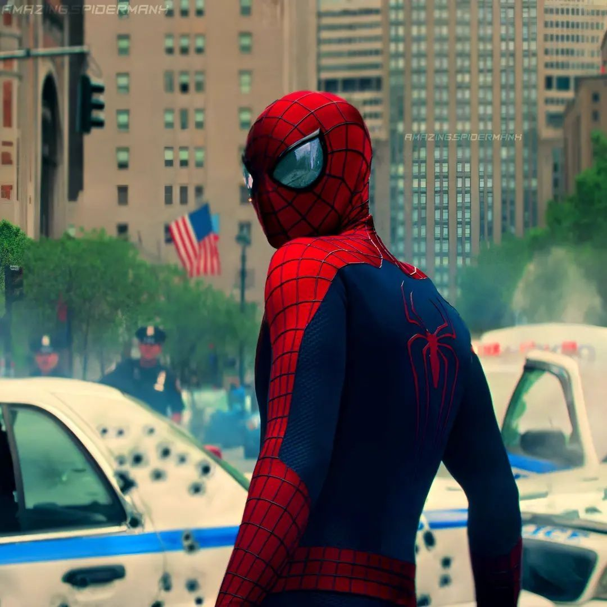
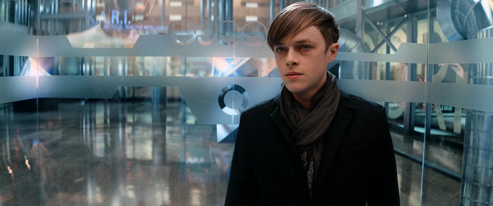

ピーター・パーカー / スパイダーマン
希望を届けるヒーロー // 運命の岐路に立つ青年
ヒーロー活動が板につき、ニューヨークの象徴として人々を笑顔にするが、グウェンの父親との「彼女を巻き込まない」という約束の幻影に苦悩する。親友ハリーの絶望や、街の電力を奪うエレクトロの脅威に立ち向かうが、時計塔での決戦で生涯最大の悲劇を迎えることになる。
「撃つな！撃たないでくれ！彼は僕の友達だ！」
グウェン・ステイシー
オックスフォード大学進学を控えた秀才 // ピーターの最愛の人
ピーターを深く愛し、彼のヒーローとしての葛藤もすべて共有する。オックスフォード大学への進学が決まり英国へ旅立とうとするが、エレクトロによる大停電が発生。「街を救うために私の科学の力が必要」とピーターの制止を振り切って戦地に同行し、発電所の再起動を成功させる。
「これは私の人生よ、ピーター！私が決めるの！……あなたのウェブは電気を遮断できない、私が手伝うわ。」
マックス・ディロン / エレクトロ
誰にも気づかれない電気技師 // 街の電気を支配する男
オズコープ社の孤独な電気技師。自分を助けてくれたスパイダーマンに異常な執着を抱くが、研究所の事故で電気ウナギの水槽に落下し、生体電気エネルギーの怪物へと変貌。タイムズスクエアでの誤解から「裏切られた」と思い込み、世界中から注目（支配）されるため、ニューヨーク全体の電力をハックする。
「皆…みんなが俺を見てる…」

ハリー・オズボーン / グリーン・ゴブリン
絶望の淵に立たされた新社長 // グリーン・ゴブリン
父ノーマンからオズコープ社と、一族の不治の遺伝病を引き継ぐ。生きるためにスパイダーマンの血液を求めるがピーターに拒絶され、裏切られた絶望から狂気へ走る。役員に会社を追われた後、オズコープの地下に隠された試作アーマーを強奪し、蜘蛛の毒素を注入。異形の怪物「グリーン・ゴブリン」へと覚醒し、ピーターから最も大切なものを奪い去る。
「お前は俺に希望を与えて、それを奪ったんだ！……ピーター、お前がスパイダーマンだったのか。なら、お前の希望を奪ってやる！！」